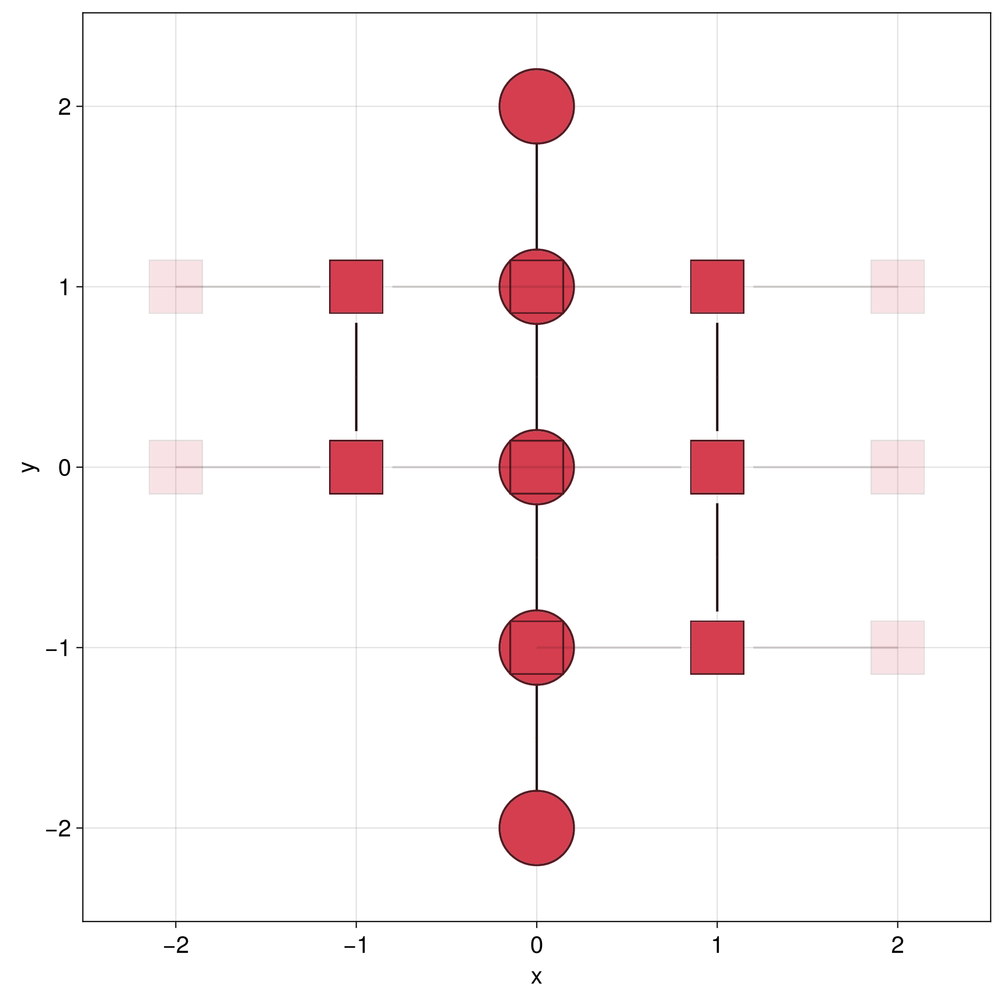

Scattering
A GreenFunction of a 0D system with attached one-dimensional leads contains all the information required to describe how electrons injected from one lead are scattered into the others. This setup is dubbed a scattering system. We can compute this information explicitly in the form of a scattering matrix S(ω), using the scattering function. Its blocks Sᵢⱼ describe the probability amplitudes for an electron in an incoming propagating mode of lead j at energy ω to be elastically scattered into an outgoing propagating mode of lead i.
Building the scattering system
Let us consider the simplest possible example: a 1D wire with a single defect site of onsite energy U. We first build a semi-infinite 1D lead using the GS.Schur solver. Leads for which we need the scattering matrix must use this solver, as it is currently the only one in Quantica.jl that can be used to compute the full set of propagating and evanescent modes in the lead. We attach this lead to both sides of the defect
julia> glead = LP.linear() |> @hopping((; t = 1) -> t) |> greenfunction(GS.Schur(boundary = 0));
julia> g = LP.linear() |> @onsite((; U = 0) -> U) |> supercell(region = iszero) |> attach(glead, reverse = true) |> attach(glead) |> greenfunction;
julia> s = scattering(g)
Scattering{Float64}: scattering problem of a 0D system with several contacts, of which at least one is a lead
Number of contacts : 2
Lead contacts : (1, 2)Computing the scattering matrix
The s::Scattering object can now be evaluated at a given energy ω and model parameters, which yields a ScatteringSolution
julia> sω = s(0.2; U = 1)
ScatteringSolution{Float64}: scattering problem solved at a fixed energy
Block sizes : (1, 1)
Scattering matrix :
0.442903-0.0738216im 0.146903+0.881366im
0.146903+0.881366im 0.442903-0.0738216imEach lead has a single propagating mode at this energy, so S is a 2×2 matrix. The block from lead j to lead i can be obtained with sω[i, j] (a reflection matrix if i == j, a transmission matrix otherwise), and the full matrix with Matrix(sω)
julia> sω[2, 1] # transmission amplitude from lead 1 to lead 2
1×1 view(::Matrix{ComplexF64}, Base.OneTo(1), Base.OneTo(1)) with eltype ComplexF64:
0.14690322580645093 + 0.8813662910628278im
julia> S = Matrix(sω);
julia> abs2.(S) # reflection and transmission probabilities
2×2 Matrix{Float64}:
0.201613 0.798387
0.798387 0.201613The number of propagating modes in each lead depends on energy. Outside the lead's band (|ω| > 2t here) there are none, and the scattering matrix is empty
julia> s(2.5; U = 1)
ScatteringSolution{Float64}: scattering problem solved at a fixed energy
Block sizes : (0, 0)
Scattering matrix :Unitarity
The propagating modes used to build S are normalized to carry unit probability current. Thanks to this, current conservation implies that the scattering matrix is unitary, S'S = I. In other words, every incoming electron is either reflected or transmitted.
julia> S'S ≈ I
trueContacts that are not leads
The central system may also have additional contacts that are not leads, such as generic self-energies. These do not have propagating modes, so they contribute no rows or columns to S, but they do affect scattering between the leads. Let us add, for example, a local absorbing self-energy Σ = -iΓ on the defect site
julia> g´ = LP.linear() |> @onsite((; U = 0) -> U) |> supercell(region = iszero) |> attach(glead, reverse = true) |> attach(glead) |> attach(@onsite((ω; Γ = 0) -> -im*Γ), region = iszero) |> greenfunction;
julia> s´ = scattering(g´)
Scattering{Float64}: scattering problem of a 0D system with several contacts, of which at least one is a lead
Number of contacts : 3
Lead contacts : (1, 2)
julia> sω´ = s´(0.2; U = 1, Γ = 0.5)
ScatteringSolution{Float64}: scattering problem solved at a fixed energy
Block sizes : (1, 1, 0)
Scattering matrix :
0.356295-0.216022im 0.0602952+0.739166im
0.0602952+0.739166im 0.356295-0.216022imThe third contact has zero propagating modes, as shown in Block sizes. Since part of the incoming current is now absorbed at the defect, S is no longer unitary. The total probability of an electron injected from either lead to come out through any lead is now smaller than one
julia> S = Matrix(sω´);
julia> S'S ≈ I
false
julia> T_plus_R = sum(abs2.(S), dims = 1)
1×2 Matrix{Float64}:
0.723614 0.723614The missing ≈ 28% is the probability of being absorbed by the extra contact. Setting Γ = 0 restores unitarity, while Γ < 0 would describe gain instead of loss, making sum(abs2.(S), dims = 1) larger than one.
The total transmission probability from lead j to lead i can be computed from the scattering matrix as tr(sω[i, j]'sω[i, j]). It coincides with transmission(g[i, j])(ω; params...), which is computed directly from the Green function, without building the full scattering matrix.
Scattering eigenvalues
When leads have several propagating modes, each block sω[i, j] is a matrix, and it is useful to decompose scattering into independent eigenchannels. Consider a more general system with two leads of different widths

julia> using LinearAlgebra
julia> gleadL = LP.square() |> hopping(1) |> supercell((1,0), region = r->-1<r[2]<2) |> greenfunction(GS.Schur(boundary = 0));
julia> gleadR = LP.square() |> hopping(1) |> supercell((1,0), region = r->-2<r[2]<2) |> greenfunction(GS.Schur(boundary = 0));
julia> g = LP.square() |> supercell(region = r->-3<r[2]<3 && r[1]≈0) |> hopping(1) + @onsite((r; U = 0) -> U * (r[2] ≈ 1)) |>
attach(gleadL, reverse = true; region = r->-1<r[2]<2) |>
attach(gleadR; region = r->-2<r[2]<2) |>
greenfunction;
julia> sω = scattering(g)(0.2; U = 2);
julia> r = sω[1, 1] # reflection matrix
2×2 view(::Matrix{ComplexF64}, Base.OneTo(2), Base.OneTo(2)) with eltype ComplexF64:
0.335108+0.204073im -0.349044-0.415527im
-0.175949+0.513358im 0.268026-0.379328im
julia> t = sω[2, 1] # transmission matrix
3×2 view(::Matrix{ComplexF64}, Base.OneTo(3), Base.OneTo(2)) with eltype ComplexF64:
-0.450606-0.274218im -0.205934-0.424627im
0.0337043-0.140695im 0.0460256+0.126135im
0.304441+0.399632im 0.312953+0.388706imNote that since the number of propagating modes on each lead at this energy is different, the transmission block is not square. The transmission eigenvalues Tₙ, i.e. the transmission probabilities of each eigenchannel, are the eigenvalues of t't. The corresponding eigenvectors are the eigenchannels themselves, expressed in the basis of incoming modes of lead 1
julia> Tₙ = eigvals(t't)
2-element Vector{Float64}:
0.0547636730067156
0.986576006675377
julia> sum(Tₙ) ≈ transmission(g[2, 1])(0.2; U = 2)
trueSimilarly, the reflection eigenvalues Rₙ are those of r'r. In a unitary two-lead system each eigenchannel is either transmitted or reflected, so that Rₙ = 1 - Tₙ
julia> Rₙ = eigvals(r'r)
2-element Vector{Float64}:
0.01342399332461809
0.9452363269932789Use t't, not t, to obtain transmission probabilities. The transmission amplitudes of each eigenchannel are given instead by the singular value decomposition t = V * Diagonal(τₙ) * W', where τₙ = svdvals(t) = sqrt.(Tₙ). The columns of W are the incoming eigenchannels in lead 1 (the eigenvectors of t't), and the columns of V the corresponding outgoing eigenchannels in lead 2.